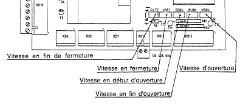
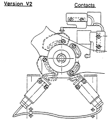

Retour Acceuil THYSSEN
D4/6 V2
Position des potentiométres sur la carte

Vitesse en début d'ouverture
# Pour augmenter la vitesse tourner le potentiomètre DEOU du coté +
#Pour diminuer la vitesse tourner le potentiomètre DEOU du coté -
Vitesse d'ouverture
#Pour augmenter la vitesse tourner le potentiomètre VROU du coté +
#Pour diminuer la vitesse tourner le potentiomètre VROU du coté -
Vitesse en fin d'ouverture
#Pour augmenter la vitesse tourner le potentiomètre RLOU du coté +
#Pour diminuer la vitesse tourner le potentiomètre RLOU du coté -
Vitesse en fermeture
#Pour augmenter la vitesse tourner le potentiomètre VRFE du coté +
#Pour diminuer la vitesse tourner le potentiomètre VRFE du coté -
Vitesse de fin de fermeture (sur opérateurs V2.2)
#Pour augmenter la vitesse tourner le potentiomètre RLFE du coté +
#Pour diminuer la vitesse tourner le potentiomètre RLFE du coté -
Position descontacts sur l'opérateur

Retour Acceuil